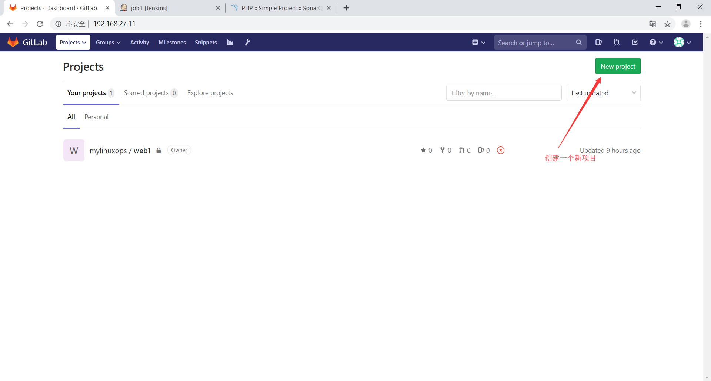
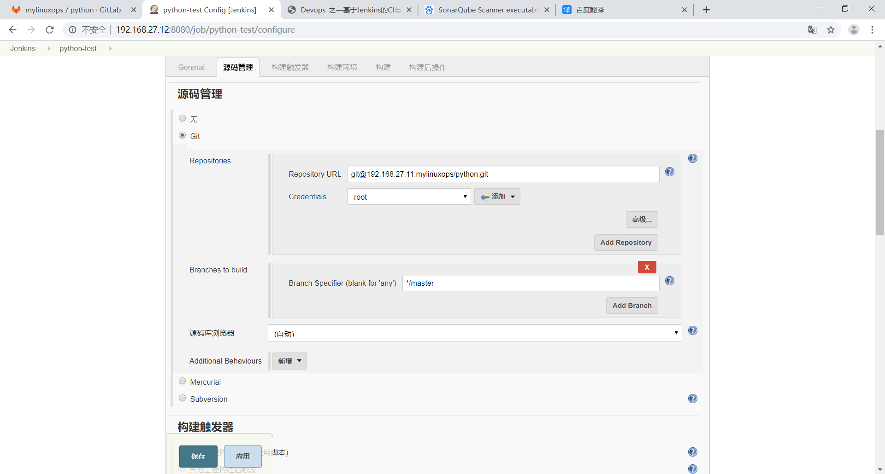

Jenkins代码质量检测
代码质量检测
官方网站：http://www.sonarqube.org/
SonarQube是一个用于代码质量管理的开放平台，通过插件机制，SonarQube可以集成不同的测试工具，代码分析工具，以及持续集成工具，例如 Hudson/Jenkins 等。
下载地址：https://www.sonarqube.org/downloads/
七个维度检测代码质量
复杂度分布：代码复杂度过高将难以理解
重复代码：程序中包含大量复制、粘贴的代码而导致代码臃肿，sonar 可以展示源码中重复严重的地方
单元测试统计：统计并展示单元测试覆盖率，开发或测试可以清楚测试代码的覆盖情况
代码规则检查：检查代码是否符合规范
注释率：若代码注释过少，特别是人员变动后，其他人接手比较难接手；若过多，又不利于阅读潜在的Bug：检测潜在的 bug
结构与设计：找出循环，展示包与包、类与类之间的依赖、检查程序之间耦合度
sonar-sever端配置
配置java环境
1 | root@slave-1:~# ls |
配置环境变量
1 | root@slave-1:~# vim /etc/profile |
由于sonarqube 7.9.1LTS不再支持MySQL此处使用sonarqube 6.9lts版
下载安装包
1 | root@mylinuxops:~# wget https://binaries.sonarsource.com/Distribution/sonarqube/sonarqube-6.7.7.zip |
创建用户
1 | root@mylinuxops:~# useradd -s /bin/bash -m sonarqube |
解压
1 | root@mylinuxops:~# unzip sonarqube-6.7.7.zip -d /usr/local/src/ |
做个软连接
1 | root@mylinuxops:~# ln -sv /usr/local/src/sonarqube-6.7.7 /usr/local/sonarqube |
修改属主属组
1 | root@mylinuxops:~# chown sonarqube.sonarqube /usr/local/src/sonarqube-6.7.7 /usr/local/sonarqube -R |
修改内核参数
1 | root@mylinuxops:~# vim /etc/sysctl.conf |
开启最大限制数
1 | root@mylinuxops:~# vim /etc/security/limits.conf |
重启服务器
1 | reboot |
安装数据库
1 | root@mylinuxops:~# apt install mysql-server -y |
创建数据库
1 | mysql> create database sonar default character set utf8 collate utf8_general_ci; |
授权用户
1 | mysql> GRANT ALL PRIVILEGES ON sonar.* TO 'sonar'@'%' IDENTIFIED BY '111111'; |
测试能否连接数据库
1 | root@mylinuxops:~# mysql -usonar -p111111 |
修改配置文件
1 | root@mylinuxops:~# grep "^[a-Z]" /usr/local/sonarqube/conf/sonar.properties |
切换用户启动sonar
1 | root@mylinuxops:~# su - sonarqube |
监控日志确保sonar起来了
1 | root@mylinuxops:/usr/local/sonarqube/logs# tail -f /usr/local/sonarqube/logs/sonar.log |
使用浏览器登录
更改语言为中文
server端配置完成
sonar-scanner配置
sonar的扫描器需要和jenkins配置在一起
1 | root@master:~# ls |
解压文件，创建软连接
1 | root@master:~# unzip sonar-scanner-cli-4.0.0.1744-linux.zip -d /usr/local/src/ |
修改配置文件
1 | root@master:~# vim /usr/local/sonar-scanner/conf/sonar-scanner.properties |
配置完毕
测试php
上传演示代码
1 | root@master:~# ls |
测试php
1 | root@master:~# cd sonar-examples-master/projects/languages/php/php-sonar-runner |
编辑配置文件
1 | root@master:~/sonar-examples-master/projects/languages/php/php-sonar-runner# vim sonar-project.properties |
在当前目录下执行扫描
1 | root@master:~/sonar-examples-master/projects/languages/php/php-sonar-runner# /usr/local/sonar-scanner/bin/sonar-scanner |
使用浏览器访问就可以看到代码质量了
使用jenkins自动扫描代码

在项目中创建一个文件
将像目录克隆到本地
1 | root@master:~# git clone git@192.168.27.11:mylinuxops/python.git |
将扫描配置文件和python代码复制到项目目录内
1 | root@master:~# cp sonar-examples-master/projects/languages/python/python-sonar-runner/sonar-project.properties python/ |
修改扫描配置文件
1 | root@master:~/python# vim sonar-project.properties |
将代码提交到gitlab
1 | root@master:~/python# git add ./* |
在jenkins上安装插件
配置扫描器
配置代码质量检测

扫描器配置参数
1 | sonar.projectKey=python |
本博客所有文章除特别声明外，均采用 CC BY-NC-SA 4.0 许可协议。转载请注明来自 MyLinuxOPS！